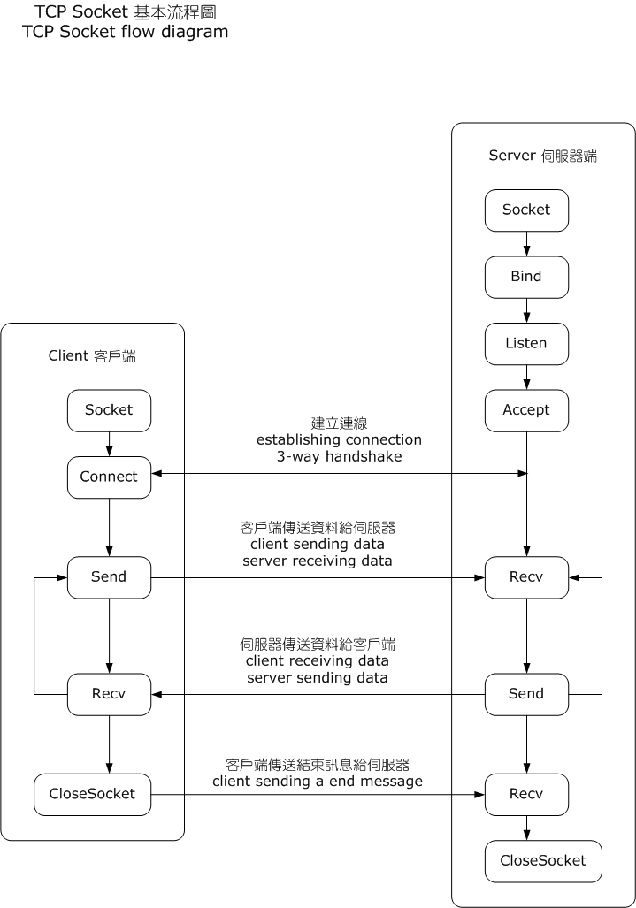

TCP Transmission Control Protocol 傳輸控制協定的作用說明。 OSI 中扮演的角色 流程  TCP 在 Berkeley Socket 之上的流程，made by OnionBulb。 範例 以連線到 google.com 中產生的多個封包做說明。 三次握手 SEQuence number AWKnowledge number 四次揮手 為什麼揮手要四次，握手僅三次就可以？ 待撰寫 最後更新: 2021-10-29